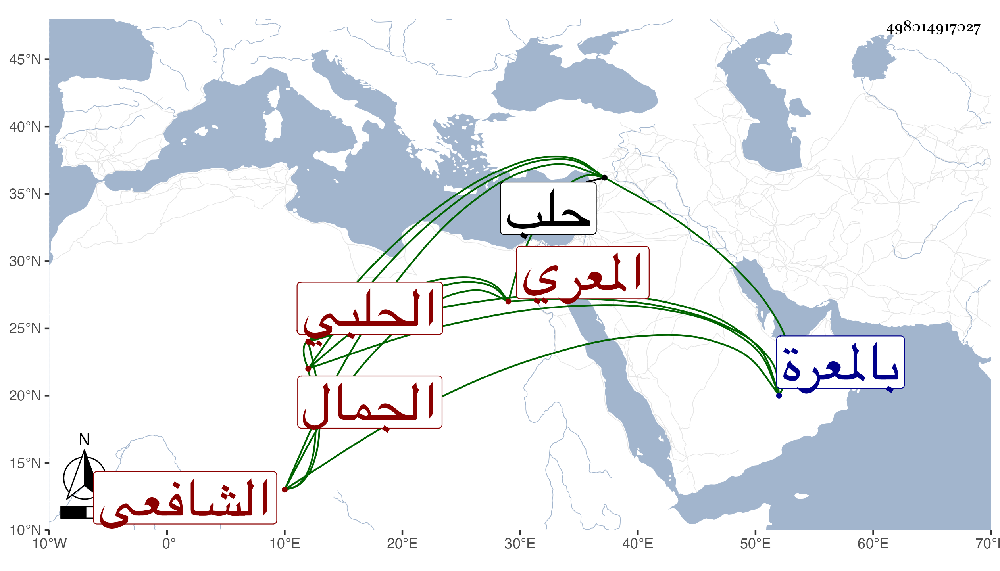

0902Sakhawi.DawLamic.ITO20230111-ara1.EIS1600.498014917027
Biography ID: 498014917027
189
عبد الله بن محمد بن زريق الجمال المعري ثم الحلبي الشافعي ويعرف بجده . ولد سنة خمس وسبعين وسبعمائة بالمعرة ونشأ بها فحفظ القرآن والتمييز في الفقه لابن البارزي واشتغل بالعلم ثم قدم حلب فاشتغل بها أيضا وولى بها توقيع الدست مدة ثم قضاء معر مصين مدة ثم جلس موقعا بباب قاضي الشافعية بها العلاء ابن خطيب الناصرية وترجمه في تاريخه مطولا وأنه مدح رؤساءها ، وكان فاضلا أديبا ناظما ناثرا مجيدهما ثم رجع إلى بلده فقطنها وولي قضاءها مدة حتى مات بها في منتصف شعبان سنة سبع وعشرين ومن نظمه كما أنشده المحب بن الشحنة :
| كل من جئت أشتكي | أبتغي عنده دوا |
| يتشكى شكيتي | كلنا في الهوى سوا |
وقد رأيتهما عندي في عبد الله بن أبي بكر بن عبد الرحمن بن محمد بن أحمد بن زريق الدمشقي الصالحي وهو غلط وقوله :
| كنت وليل العذار داج | يروق من راقه سواده |
| فاحترق القلب بالتنائي | وذر في عارضي رماده |
